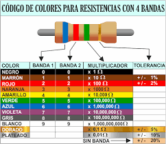
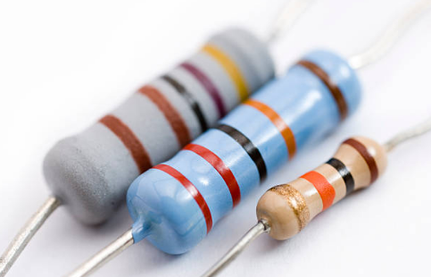
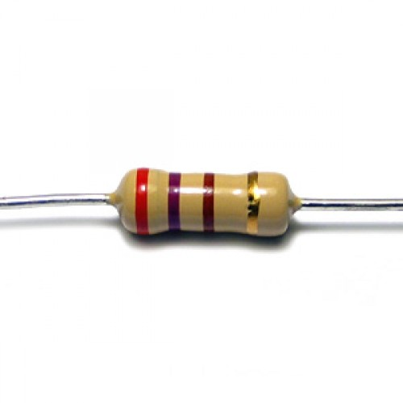

¿Qué es el código de color?
El código de color es un sistema utilizado para identificar el
valor de resistencia de una resistencia eléctrica. Está compuesto
por bandas de colores que representan números y otras
características importantes como la tolerancia y, en algunos
casos, la confiabilidad y la tasa de fallo.
¿Cómo funciona el código de colores?
El código de colores de las resistencias está compuesto por un
número de bandas que va desde 3 a 6 y que, además de la
resistencia, indican la tolerancia, confiabilidad y tasa de fallo.
La manera de leer e interpretar el código de color, va depender de
la cantidad de bandas que tenga.
¿Cómo se lee el código de colores?

La lectura del código de colores va a depender de la cantidad de
bandas, que recordemos, pueden ser de 3 a 6. Veamos cada caso en
particular.
Tres bandas

El uso del código de color de tres bandas es el más extraño de
todos. Se lee de la siguiente manera La primera banda, que
corresponde al extremo izquierdo, significa el dígito más
significativo del resistor. La segunda banda representa al segundo
dígito más representativo. La tercera significa la potencia de 10
elevada al color correspondiente y multiplicado por el número
obtenido de las dos anteriores. Cabe destacar que la tolerancia
para resistencias de tres bandas es del 20.
Cuatro bandas

El código de color de color de cuatro bandas es el más común. Se
lee de la siguiente manera La primera banda, partiendo desde el
extremo izquierdo, representa el dígito más significativo del
resistor. La segunda banda es el segundo dígito más
representativo. Esta banda refiere a la potencia de 10 elevada al
color correspondiente y multiplicado por el número obtenido de la
primera y segunda banda. La cuarta banda representa la tolerancia.
Cinco bandas

En estos casos, la lectura del código se realiza así La primera
banda, siempre partiendo del extremo izquierdo, representa el
dígito más significativo del resistor. Tal y como sucede en los
otros casos, la segunda banda es el segundo dígito más importante.
La tercera banda es el tercer dígito más significativo. La cuarta
representa la potencia de 10 elevada al color correspondiente y
multiplicado por el número obtenido de las tres bandas anteriores.
La quinta banda refleja la tolerancia. Cabe destacar hay una
excepción cuando la cuarta banda es de color Oro o Plata. En estos
casos, las dos primeras bandas indican los dos dígitos más
significativos de resistencia, la tercera indica el multiplicador,
la cuarta la tolerancia y la quinta el coeficiente de temperatura
con unidades de ppm/K.
Seis bandas

Estas son las resistencias de más alta precisión y su código se
lee de la siguiente manera La primera banda, partiendo por
supuesto del extremo izquierdo, representa el dígito más
significativo del resistor. La segunda banda es el segundo dígito
más importante. La tercera es el tercer dígito más significativo.
La cuarta representa la potencia de 10 elevada al color
correspondiente y multiplicado por la primera, segunda y tercera
banda. La quinta banda representa la tolerancia. La sexta refleja
el coeficiente de temperatura. El color más utilizado para la
sexta banda es el negro, que representa 100 ppm/K. Esto indica
que, para un cambio de 100ºC en la temperatura, puede haber una
modificación de 0,1 en el valor de resistencia. En general, esta
banda representa el coeficiente de temperatura, aunque en algunos
casos pueden reflejar la confiabilidad y la tasa de fallas.